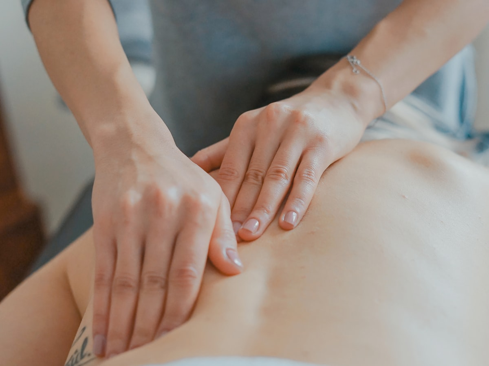
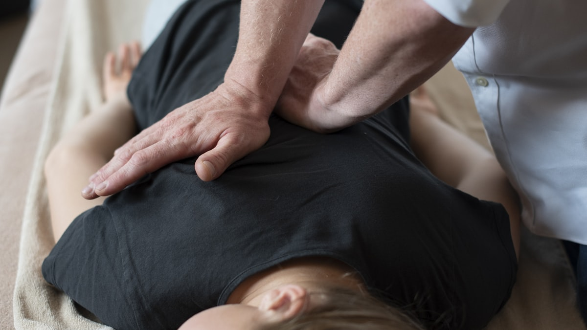

揉んでも戻るつらさに、姿勢と体の使い方から向き合う整体です。
※施術は医療行為ではありません。効果の感じ方には個人差があります。
まずは初回体験で
お体の状態を知ることから
「話を聞いてみたい」だけでも大歓迎。無理な回数のご案内はいたしません。
CHECK
CAUSE
つらさの正体は「硬くなった筋肉」
そのものではなく、
筋肉を硬くさせている原因にあります。
REASON


初回2,980円で、
「揉んで終わり」との違いを体験
ご予約はLINEが便利です。ご質問だけでもお気軽にどうぞ。
FLOW
初回はカウンセリングを含めて約60分。
流れが分かっていれば、初めてでも安心です。
問診票をもとに、つらさの経過やお仕事・生活の様子をじっくり伺います。「どうなりたいか」のゴールもここで一緒に決めます。
立ち姿勢・骨盤のバランス・体の動きをチェックし、つらさに関わっているポイントを分かりやすくご説明します。
検査結果に合わせたソフトな施術で、負担が集中している筋肉・関節をゆるめ、体のバランスを整えていきます。
施術前後の変化を一緒に確認し、ご自宅でのセルフケアと、お体に合った通い方の目安をご提案します。通うかどうかはご自身でお決めください。
PRICE
分かりやすい料金設定です。表示はすべて税込です。
| 初回体験カウンセリング＋検査＋施術（約60分） | 通常 6,600円2,980円 |
|---|---|
| 2回目以降施術（約40分） | 6,600円 |
| 継続して通われる方へペースに合わせたお得なプランもご用意しています。ご希望の方にのみご案内します。 | ご来院時にご案内 |
※当院の施術は自費（保険適用外）です。
※初回体験は「まずは一度受けて判断したい」という方のための価格です。2回目以降のご予約を強くおすすめすることはありません。
VOICE
在宅勤務が増えてから腰の重さがひどくなり、マッサージ通いを繰り返していました。ここでは最初に姿勢を見ながら「なぜつらくなるのか」を説明してもらえたのが納得感がありました。教わった座り方を意識するようになってから、夕方のつらさが気にならない日が増えています。
整体は痛いイメージがあって避けていたのですが、ここは終始ソフトで、施術中に眠くなるくらいでした。それでも施術後は肩まわりが軽く感じられて驚きました。仕事帰りに21時まで通えるのも、続けられている理由です。
朝起きるたびに腰が重く、もう歳だから仕方ないと思っていました。カウンセリングで日常のクセを指摘されて思い当たることばかり。回数券を売り込まれることもなく、自分のペースで通えるのがありがたいです。今は月1回のメンテナンスで通っています。
※個人の感想であり、感じ方には個人差があります。
※掲載内容はサンプルです。
Q&A
お体の状態や生活習慣によって異なるため、一概には言えません。初回のカウンセリングと検査の結果をもとに、あなたに合った通い方の目安をご提案します。目安はあくまでご提案であり、通うかどうか・どのペースで通うかはご自身でお決めいただけます。
当院の施術はすべて自費（保険適用外）です。そのぶん時間や施術内容の制約がなく、お一人おひとりの状態に合わせたオーダーメイドの施術に集中できます。
バキバキと鳴らしたり、強く押したりする施術は行いません。体がこわばらない程度のソフトな刺激で進めますので、整体が初めての方や刺激が苦手な方も安心してお受けいただけます。施術中も遠慮なくお声がけください。
動きやすい服装（ジャージ・スウェットなど）がおすすめです。お仕事帰りのスーツやスカートの場合も、お着替えをご用意していますので、そのままお越しいただいて大丈夫です。
専用駐車場はございませんが、ビル周辺に複数のコインパーキングがあります。お車でお越しの際は、ご予約時にお近くの駐車場をご案内します。電車の場合はJR岡山駅から徒歩約5分です。
当院は完全予約制のため、事前のご予約をお願いしています。LINEなら24時間いつでも予約リクエストが可能です。当日のご予約も、空きがあればご案内できますのでお気軽にお問い合わせください。
ACCESS
| 院名 | しっとる整体院 | ||||||||||||||||
|---|---|---|---|---|---|---|---|---|---|---|---|---|---|---|---|---|---|
| 住所 | 〒700-0901 岡山県岡山市北区本町6-36 第一セントラルビル4階 | ||||||||||||||||
| アクセス | JR「岡山駅」より徒歩約5分 | ||||||||||||||||
| 電話 | 086-200-0000 | ||||||||||||||||
| 受付時間 |
平日・土 10:00〜21:00
| ||||||||||||||||
| 定休日 | 日曜・祝日 | ||||||||||||||||
| ご予約 | 完全予約制（LINE・お電話にて） |
我慢の毎日から、
そろそろ抜け出しませんか
初回体験 2,980円（税込）・完全予約制。ご質問だけでもお気軽に。